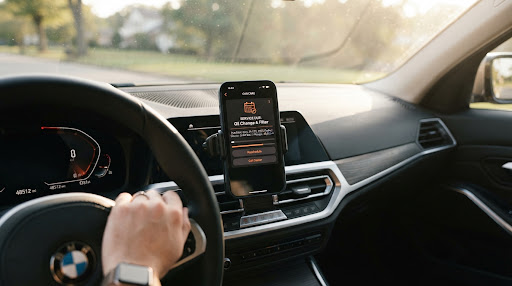
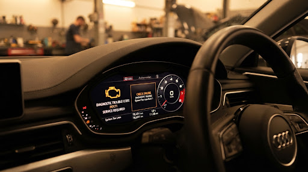
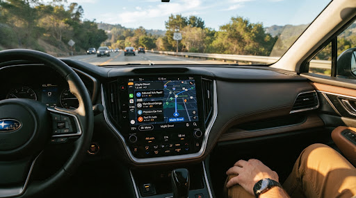
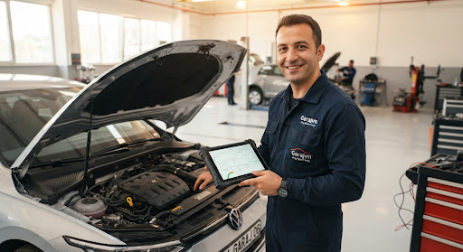

Aracınızın sağlığı emin ellerde, aklınız yolda kalmasın.
Garajım; periyodik bakım takibini kolaylaştıran, motor arıza kodlarını (DTC) Türkçe ve net çözümlerle açıklayan, aracınızı dürüstçe takip eden samimi bir dijital garajdır.
34 GJR 1923
Periyodik Bakım: Tamamlandı
Pazarlama hileleri yok, karmaşık sözleşmeler yok.
Sadece aracınızı, cebinizi ve sürüş güvenliğinizi koruyan pratik, net araç bakım çözümleri.

Akıllı Bakım Hatırlatıcısı
Kilometre ve tarihe göre yaklaşan muayene, motor yağı, triger kayışı ve filtre değişimlerini zamanında haber verir; sürpriz masrafları engeller.

Şeffaf DTC Arıza Teşhisi
Göstergede yanan sarı motor ışığının gerçekte ne anlama geldiğini, aciliyet seviyesini ve gereksiz parça değişimlerini nasıl önleyeceğinizi Türkçe açıklar.

Yakındaki Güvenilir Servisler
Yolda kaldığınızda veya periyodik bakım vakti geldiğinde, çevrenizdeki en yakın tamirci ve yetkili servisleri Google Haritalar entegrasyonuyla bulun.

Usta ile aynı dili konuşun
Tamirhaneye gitmeden önce arızanın boyutunu bilin, gereksiz parça değişimlerine para ödemeyin.
Arıza lambası yandığında ne yapacaksınız?
Gösterge tablosunda sarı motor ikonu parladığında panik yok. Garajım, 5.000'den fazla hata kodunun ne anlama geldiğini anlaşılır bir dille önünüze serer.
Rastgele / Çoklu Silindir Ateşleme Arızası
Motor kontrol modülü (ECM), bir veya birden fazla silindirde düzensiz ateşleme algıladı. Aracın çekişi düşebilir veya rölantide titreme yapabilir.
Bakım geçmişiniz cebinizde, defterler tarihe karıştı.
Kağıt servis fişlerini torpido gözünde kaybetmeye son. Yağ değişiminden balata yenilemeye kadar tüm harcamalarınız ve servis kayıtlarınız tek bir yerde güvenle saklanır.
Harcama ve Maliyet Grafiği
Aracınıza ayda ve yılda ne kadar masraf yaptığınızı kalem kalem görün.
Firebase Güvenli Bulut Yedekleme
Telefonunuz değişse bile tüm araç kayıtlarınız, fotoğraflarınız güvende kalır.
Ne zaman ne yapıldığını bilmenin rahatlığı.
Yolda kaldığınızda ya da bakım vakti geldiğinde yalnız değilsiniz.
Uygulama içerisinden tek bir dokunuşla konumunuza en yakın yetkili servisleri, oto sanayi ustalarını, lastikçileri ve egzoz muayene istasyonlarını anında listeleyin.
Hemen indirin ve garajınızı oluşturun.
Aracınızın tüm geçmişini, yaklaşan bakım günlerini ve gösterge arızalarını cebinizden huzurla takip edin.